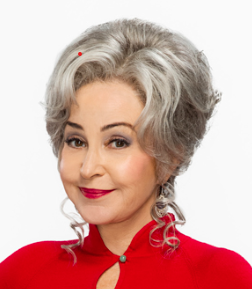

Our Beloved Summer

. The series follows Sheldon Cooper's early life as a child prodigy in the fictional town of Medford, Texas. As he grows up, he tries to fit into a world of people, including his own family and friends, who struggle to cope with his intellectual capabilities and social ineptitude.
Sheldon Cooper
"is characterized by a strict adherence to routine and hygiene, an overly intellectual personality, a tenuous understanding of irony, sarcasm and humor, and a general lack of humility or empathy
Missy Cooper
She is portrayed as a bratty, snarky, cynical 9-year-old who fights with Sheldon for attention from their parents. This pushes her and Georgie closer together, whether it's helping each other with homework or trading favors.
Georgie Cooper
He comes across as a cocky and a bit lazy teen who has low intelligence despite his younger brother Sheldon overshadowing him with vast knowledge, which could get on Georgie's nerves at times.
Mary Cooper
She was usually cheerful, was very rarely downcast, and possessed an ever-sunny disposition. Mary indulged in free and frequent expression of her emotional feelings and was never observed to be sorrowful until after the sudden death of Joseph.
George Cooper
He is a loving father and has defended Sheldon on multiple occasions, earning Sheldon's love and appreciation. Contrary to Sheldon's memories in adult time, he is no alcohol-abusing Texas redneck, but he does drink a lot.
Meemaw
Meemaw is a wonderful, warm, loving, sweet and wise grandmother who's protective and caring for Sheldon. She calls him "Moon-pie" because he's so "nummy-nummy, she could just eat him up!"